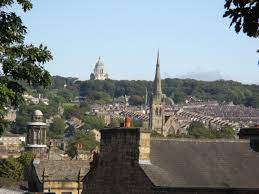

Lancaster,Lancashire


Lancaster Castle is a medieval castle founded in the 11th century on the site of a Roman fort overlooking a crossing of the River Lune. The castle played a part in the English Civil War and was an active prison from 1196-2011. Today, 45 minute guided tours are offered 7 days a week - walking visitors through local history of witchcraft and crime & punishment through the ages. Historic England are currently renovating the site to expand unguided access to the public in the near future. The Crown Court continues to sit in one of the court rooms.